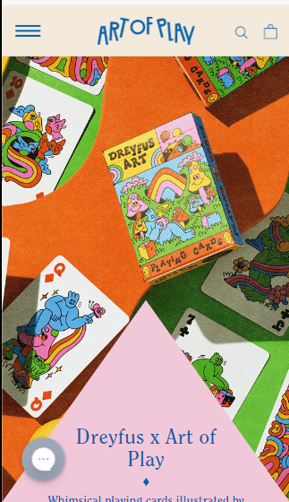

Hick's Law
Amazon
www.amazon.com
Amazon embodies Hick's law rather well. Being a rather large online storefront, there are thousands of items for sale, which means that navigating the user to an item in order to buy one requires careful application of this law. The options presented take up a lot of room on the page, but each option leads to a smaller subcategory of even more options. This ensures that each visitor to the website can explore quickly, while also seeing enough choices to stay a while and hopefully make a purchase.
White space
eBay
www.ebay.com
eBay makes clever use of whitespace. While the UI doesn't look the most polished, the use of whitespace makes it easy to look at, which makes it easy to navigate and therefore easy to buy something from.
Visual Hierarchy
Art of Play
www.artofplay.com

Art of Play utilizes visual hierarchy excellently on its mobile site. The design encourages the user to look to the end of the shape, which encourages them to scroll down, enabling them to see more shapes and more products, which encourages even further scrolling until the whole website gets a good once-over. By then, the website has managed to show off its most important products, accomplishing a goal of advertisement via a good home page.